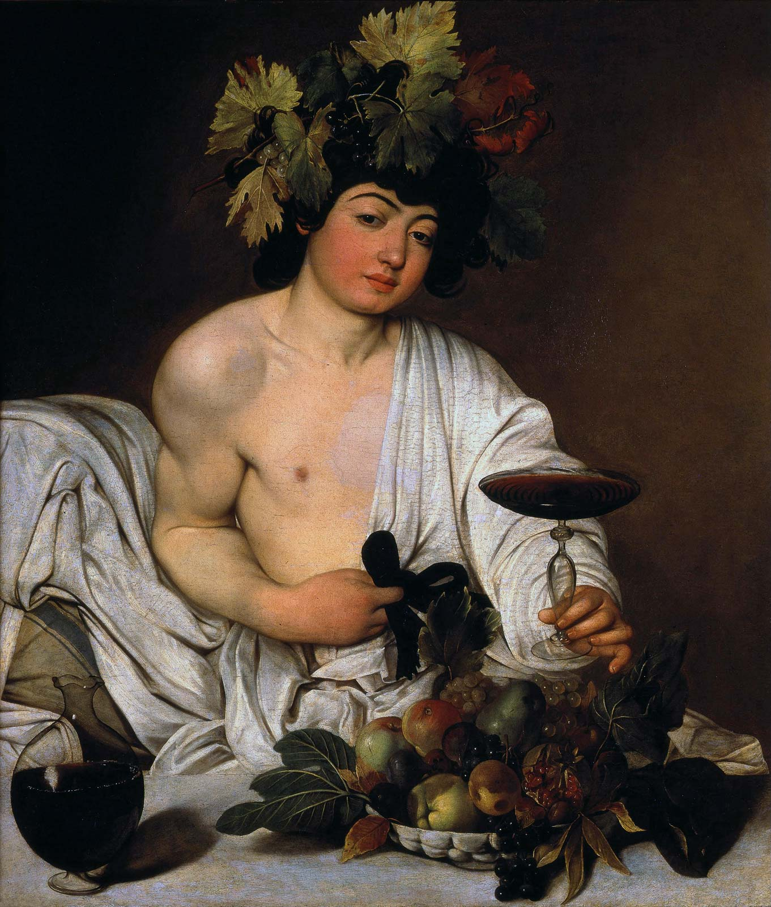

Dionysus
god of wine, maddness, and insanity
Dionysus is the god of the grape-harvest, winemaking and wine, of fertility, orchards and fruit, vegetation, insanity, ritual madness, religious ecstasy, festivity and theatre in ancient Greek religion and myth.
He is also known as Bacchus, the name adopted by the Romans; the frenzy he induces is bakkheia. Another name used by the Romans is Liber meaning "free," due to his association with wine and the Bacchanalia and other rites, and the freedom associated with it.
His origins are uncertain, and his cults took many forms; some are described by ancient sources as Thracian, others as Greek. Though most accounts say he was born in Thrace, traveled abroad, and arrived in Greece as a foreigner, evidence from the Mycenaean period of Greek history shows that he is one of Greece's oldest attested gods. His attribute of "foreignness" as an arriving outsider-god may be inherent and essential to his cults, as he is a god of epiphany, sometimes called "the god that comes." The earliest written records of Dionysus worship come from Mycenaean Greece, specifically in and around the Palace of Nestor in Pylos, dated to around 1300 BC.